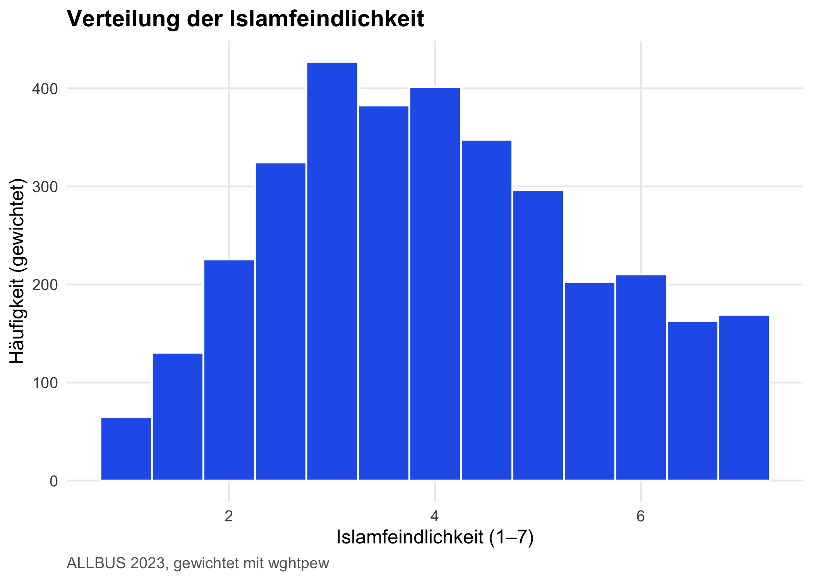
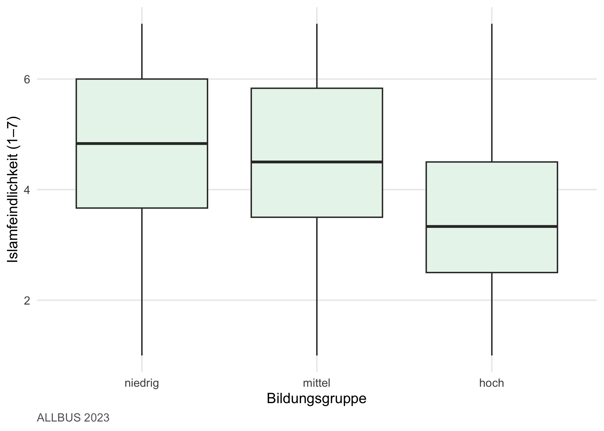
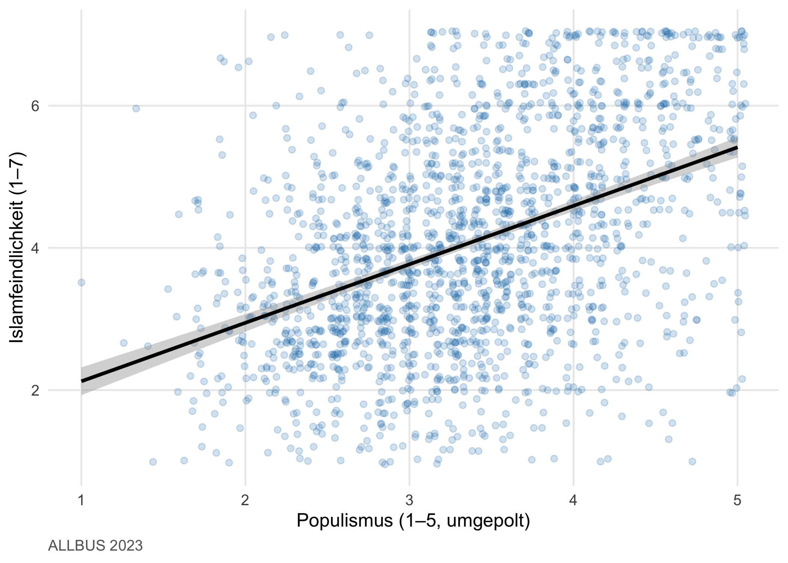

Nachdem du in Kapitel 5 die Datenpräp-Pipeline gebaut und in Kapitel 6 die ggplot2-Grammatik kennengelernt hast, beginnt jetzt die eigentliche Analyse. Wir gehen Schritt für Schritt von der einzelnen Variable bis zu Zusammenhängen zwischen zwei Variablen — und beantworten dabei die ersten Teilfragen unserer Mini-Studie:
Wie sieht die Verteilung von Islamfeindlichkeit in Deutschland 2023 aus? Unterscheiden sich Ost und West? Hängt Islamfeindlichkeit mit Populismus zusammen?
Hinweis
Forschungsjournal: Wo stehst du in deiner Mini-Studie? Du hast die Skalen, du beherrschst ggplot2 — jetzt sind die ersten Hypothesen-Tests dran. Am Ende dieses Kapitels weißt du, wie sich Islamfeindlichkeit verteilt, wo Mittelwertunterschiede zwischen Gruppen statistisch (und inhaltlich) bedeutsam sind und welche Variablen bivariat mit deiner Zielvariable zusammenhängen. Das ist die Bühne, auf der die multivariate Modellierung in Kapitel 9 aufbaut.
7.1 Worum es geht
Wer eine multivariate Regression rechnet, ohne vorher die Verteilung der Zielvariable angeschaut zu haben, arbeitet blind. Die Faustregel der empirischen Sozialforschung: erst beschreiben, dann erklären. Bevor du ein komplexes Modell aufsetzt, willst du wissen, wie deine Variablen aussehen — sind sie symmetrisch verteilt oder schief? Wo liegen die meisten Antworten? Korrelieren die wichtigsten Variablen überhaupt mit deiner Zielvariable, oder verlierst du Zeit mit irrelevanten Prädiktoren?
Die Statistik nennt diese ersten Schritte univariate und bivariate Analyse. Die Trennung ist einfach:
Univariat heißt: eine Variable für sich allein. Wie ist sie verteilt? Wo liegt ihr Mittelwert? Wie stark streuen die Werte? Eine Histogramm-Frage.
Bivariat heißt: zwei Variablen gemeinsam. Hängen sie zusammen? Unterscheiden sich Gruppen? Eine Scatterplot- oder Boxplot-Frage.
Bei der bivariaten Analyse gibt es zwei methodisch ähnliche, aber konzeptionell unterschiedliche Fragen, die du nicht verwechseln solltest:
Zusammenhang — variieren zwei Variablen gemeinsam? (Korrelation für metrische Variablen, Chi² für kategoriale.)
Unterschied — unterscheiden sich Gruppen in einer Variable? (t-Test, ANOVA für metrische Variablen pro Gruppe.)
Beide Fragen beantworten denselben methodischen Kern: Gibt es einen statistisch belastbaren Zusammenhang zwischen zwei Variablen? Aber die Werkzeuge und die Berichtsformate sind unterschiedlich.
Dieses Kapitel führt dich durch das mariposa-Inventar für jeden Standard-Test — Häufigkeit, Deskriptiva, Kreuztabelle, Korrelation, Mittelwertvergleich — jeweils gewichtet, mit Effektgröße und SPSS-vergleichbarem Output. Wenn du am Ende des Kapitels weißt, wie sich Islamfeindlichkeit verteilt, ob Ost und West sich unterscheiden, und ob Populismus damit zusammenhängt, hast du genau das Fundament gelegt, das du in Kapitel 9 für die multivariate Modellierung brauchst.
Was du nach diesem Kapitel kannst
Häufigkeitsverteilungen einer Variable berichten — gewichtet und ungewichtet.
Mittelwert, Median, Streuung, IQR, Schiefe, Wölbung und Standardfehler bestimmen.
Univariate Häufigkeiten gegen eine theoretische Verteilung testen (Binomialtest, χ²-GOF).
Kreuztabellen mit Chi-Quadrat-Test, Fisher-Test, McNemar-Test und Effektgrößen lesen.
Pearson-, Spearman- und Kendall-Korrelationen berechnen und interpretieren.
Mittelwerte zweier Gruppen mit einem t-Test vergleichen — inklusive Voraussetzungs-Check (Levene).
Mittelwerte mehrerer Gruppen mit einer einfaktoriellen ANOVA vergleichen und vier Post-Hoc-Verfahren wählen.
Nicht-parametrische Alternativen anwenden, wenn Voraussetzungen verletzt sind.
Effektgrößen einordnen — wann ein signifikanter Test inhaltlich klein, mittel oder groß ist.
Erste Grafiken zu deinen Befunden erstellen.
7.2 Über Gewichtung
In der ALLBUS-Stichprobe sind die neuen Bundesländer gewollt überrepräsentiert, damit Aussagen auch dort statistisch belastbar sind. Für deutschlandweite Schätzungen brauchst du daher das personenbezogene Ost-West-Gewichtwghtpew. Wenn du Gewichte ignorierst, sind deine Aussagen über „die Deutschen” verzerrt.
Tipp
SPSS → R. In SPSS aktivierst du Gewichtung einmal session-weit mit WEIGHT BY wghtpew. In R ist das anders: jede Funktion, die Gewichtung braucht, bekommt das Argument weights = einzeln. Das wirkt am Anfang umständlich, ist aber transparent — du siehst auf einen Blick, ob eine Analyse gewichtet ist.
In mariposa heißt das Argument durchgängig weights = wghtpew — egal, ob du eine Häufigkeitstabelle oder eine Regression rechnest.
7.3 Univariate Statistik
7.3.1 Häufigkeitstabellen mit frequency()
frequency() aus mariposa ist das R-Pendant zu SPSS’ FREQUENCIES — gleicher Output (Wert, Label, N, Prozent, gültige Prozent, kumulierte Prozent) plus oben kurz die Streumaße.
Frage: Wie ist die Verteilung von Ost und West im gewichteten Sample?
Lesart. Die gewichteten Häufigkeiten spiegeln das tatsächliche Verhältnis Ost/West in der deutschen Bevölkerung — ca. 83 % West, 17 % Ost. In den ungewichteten Rohdaten wäre Ost stärker vertreten gewesen.
Für eine ganze Itembatterie kombinierst du frequency() mit tidyselect-Helfern:
Weighted Frequency Analysis Results
-----------------------------------
mm01 (ISLAMAUSUEBUNG IN DEUTSCHL. BESCHRAENKEN)
# total N=5246 valid N=3401 mean=3.32 sd=2.16 skewness=0.44
+-----------+---------------------+--------+--------+--------+--------+
| Value | Label | N | Raw % |Valid % | Cum. % |
+-----------+---------------------+--------+--------+--------+--------+
| 1 | STIMME GAR NICHT ZU | 1077 | 20.53 | 31.66 | 31.66 |
| 2 | .. | 487 | 9.29 | 14.32 | 45.99 |
| 3 | .. | 298 | 5.69 | 8.77 | 54.76 |
| 4 | .. | 517 | 9.85 | 15.19 | 69.95 |
| 5 | .. | 322 | 6.15 | 9.48 | 79.43 |
| 6 | .. | 218 | 4.15 | 6.41 | 85.84 |
| 7 | STIMME VOLL+GANZ ZU | 482 | 9.18 | 14.16 | 100.00 |
+-----------+---------------------+--------+--------+--------+--------+
| Total | Total Valid | 3401 | 64.84 | 100.00 | NA |
+-----------+---------------------+--------+--------+--------+--------+
| -42 | DATENFEHLER: MFN | 2 | 0.05 | NA | NA |
| -11 | TNZ: SPLIT | 1646 | 31.38 | NA | NA |
| -9 | KEINE ANGABE | 73 | 1.39 | NA | NA |
| -8 | WEISS NICHT | 123 | 2.35 | NA | NA |
+-----------+---------------------+--------+--------+--------+--------+
| NA(total) | Total Missing | 1845 | 35.16 | NA | NA |
+-----------+---------------------+--------+--------+--------+--------+
mm02 (ISLAM PASST IN DIE DEUTSCHE GESELLSCHAFT)
# total N=5246 valid N=3400 mean=3.23 sd=1.86 skewness=0.42
+-----------+---------------------+--------+--------+--------+--------+
| Value | Label | N | Raw % |Valid % | Cum. % |
+-----------+---------------------+--------+--------+--------+--------+
| 1 | STIMME GAR NICHT ZU | 871 | 16.60 | 25.61 | 25.61 |
| 2 | .. | 527 | 10.04 | 15.49 | 41.10 |
| 3 | .. | 511 | 9.74 | 15.03 | 56.14 |
| 4 | .. | 650 | 12.40 | 19.13 | 75.27 |
| 5 | .. | 364 | 6.94 | 10.71 | 85.98 |
| 6 | .. | 250 | 4.76 | 7.35 | 93.32 |
| 7 | STIMME VOLL+GANZ ZU | 227 | 4.33 | 6.68 | 100.00 |
+-----------+---------------------+--------+--------+--------+--------+
| Total | Total Valid | 3400 | 64.81 | 100.00 | NA |
+-----------+---------------------+--------+--------+--------+--------+
| -42 | DATENFEHLER: MFN | 2 | 0.05 | NA | NA |
| -11 | TNZ: SPLIT | 1646 | 31.38 | NA | NA |
| -9 | KEINE ANGABE | 71 | 1.36 | NA | NA |
| -8 | WEISS NICHT | 126 | 2.40 | NA | NA |
+-----------+---------------------+--------+--------+--------+--------+
| NA(total) | Total Missing | 1846 | 35.19 | NA | NA |
+-----------+---------------------+--------+--------+--------+--------+
mm03 (ANWESENHEIT VON MUSLIMEN BRINGT KONFLIKT)
# total N=5246 valid N=3438 mean=4.09 sd=1.89 skewness=-0.05
+-----------+---------------------+--------+--------+--------+--------+
| Value | Label | N | Raw % |Valid % | Cum. % |
+-----------+---------------------+--------+--------+--------+--------+
| 1 | STIMME GAR NICHT ZU | 396 | 7.55 | 11.52 | 11.52 |
| 2 | .. | 461 | 8.80 | 13.42 | 24.94 |
| 3 | .. | 407 | 7.76 | 11.84 | 36.77 |
| 4 | .. | 719 | 13.71 | 20.92 | 57.69 |
| 5 | .. | 574 | 10.94 | 16.69 | 74.38 |
| 6 | .. | 404 | 7.69 | 11.74 | 86.12 |
| 7 | STIMME VOLL+GANZ ZU | 477 | 9.10 | 13.88 | 100.00 |
+-----------+---------------------+--------+--------+--------+--------+
| Total | Total Valid | 3438 | 65.54 | 100.00 | NA |
+-----------+---------------------+--------+--------+--------+--------+
| -42 | DATENFEHLER: MFN | 1 | 0.02 | NA | NA |
| -11 | TNZ: SPLIT | 1646 | 31.38 | NA | NA |
| -9 | KEINE ANGABE | 59 | 1.12 | NA | NA |
| -8 | WEISS NICHT | 101 | 1.93 | NA | NA |
+-----------+---------------------+--------+--------+--------+--------+
| NA(total) | Total Missing | 1808 | 34.46 | NA | NA |
+-----------+---------------------+--------+--------+--------+--------+
mm04 (STAAT SOLLTE ISLAM. GRUPPEN BEOBACHTEN)
# total N=5246 valid N=3422 mean=4.00 sd=2.07 skewness=0.01
+-----------+---------------------+--------+--------+--------+--------+
| Value | Label | N | Raw % |Valid % | Cum. % |
+-----------+---------------------+--------+--------+--------+--------+
| 1 | STIMME GAR NICHT ZU | 552 | 10.53 | 16.14 | 16.14 |
| 2 | .. | 494 | 9.42 | 14.44 | 30.59 |
| 3 | .. | 351 | 6.69 | 10.26 | 40.85 |
| 4 | .. | 601 | 11.46 | 17.57 | 58.42 |
| 5 | .. | 443 | 8.44 | 12.94 | 71.36 |
| 6 | .. | 392 | 7.47 | 11.45 | 82.80 |
| 7 | STIMME VOLL+GANZ ZU | 589 | 11.22 | 17.20 | 100.00 |
+-----------+---------------------+--------+--------+--------+--------+
| Total | Total Valid | 3422 | 65.24 | 100.00 | NA |
+-----------+---------------------+--------+--------+--------+--------+
| -42 | DATENFEHLER: MFN | 4 | 0.08 | NA | NA |
| -11 | TNZ: SPLIT | 1646 | 31.38 | NA | NA |
| -9 | KEINE ANGABE | 65 | 1.25 | NA | NA |
| -8 | WEISS NICHT | 108 | 2.05 | NA | NA |
+-----------+---------------------+--------+--------+--------+--------+
| NA(total) | Total Missing | 1824 | 34.76 | NA | NA |
+-----------+---------------------+--------+--------+--------+--------+
mm05 (MUSLIMISCHER BUERGERMEISTER IN ORDNUNG)
# total N=5246 valid N=3408 mean=4.31 sd=2.30 skewness=-0.25
+-----------+---------------------+--------+--------+--------+--------+
| Value | Label | N | Raw % |Valid % | Cum. % |
+-----------+---------------------+--------+--------+--------+--------+
| 1 | STIMME GAR NICHT ZU | 741 | 14.13 | 21.75 | 21.75 |
| 2 | .. | 267 | 5.10 | 7.85 | 29.60 |
| 3 | .. | 218 | 4.16 | 6.41 | 36.01 |
| 4 | .. | 459 | 8.75 | 13.47 | 49.48 |
| 5 | .. | 339 | 6.47 | 9.96 | 59.43 |
| 6 | .. | 468 | 8.92 | 13.73 | 73.17 |
| 7 | STIMME VOLL+GANZ ZU | 915 | 17.43 | 26.83 | 100.00 |
+-----------+---------------------+--------+--------+--------+--------+
| Total | Total Valid | 3408 | 64.97 | 100.00 | NA |
+-----------+---------------------+--------+--------+--------+--------+
| -11 | TNZ: SPLIT | 1646 | 31.38 | NA | NA |
| -9 | KEINE ANGABE | 71 | 1.35 | NA | NA |
| -8 | WEISS NICHT | 120 | 2.29 | NA | NA |
+-----------+---------------------+--------+--------+--------+--------+
| NA(total) | Total Missing | 1838 | 35.03 | NA | NA |
+-----------+---------------------+--------+--------+--------+--------+
mm06 (UNTER MUSLIMEN SIND VIELE REL. FANATIKER)
# total N=5246 valid N=3317 mean=4.21 sd=1.99 skewness=-0.04
+-----------+---------------------+--------+--------+--------+--------+
| Value | Label | N | Raw % |Valid % | Cum. % |
+-----------+---------------------+--------+--------+--------+--------+
| 1 | STIMME GAR NICHT ZU | 333 | 6.34 | 10.03 | 10.03 |
| 2 | .. | 546 | 10.40 | 16.45 | 26.48 |
| 3 | .. | 377 | 7.18 | 11.35 | 37.83 |
| 4 | .. | 565 | 10.76 | 17.02 | 54.85 |
| 5 | .. | 478 | 9.11 | 14.41 | 69.26 |
| 6 | .. | 376 | 7.18 | 11.35 | 80.61 |
| 7 | STIMME VOLL+GANZ ZU | 643 | 12.26 | 19.39 | 100.00 |
+-----------+---------------------+--------+--------+--------+--------+
| Total | Total Valid | 3317 | 63.23 | 100.00 | NA |
+-----------+---------------------+--------+--------+--------+--------+
| -11 | TNZ: SPLIT | 1646 | 31.38 | NA | NA |
| -9 | KEINE ANGABE | 100 | 1.91 | NA | NA |
| -8 | WEISS NICHT | 182 | 3.47 | NA | NA |
+-----------+---------------------+--------+--------+--------+--------+
| NA(total) | Total Missing | 1929 | 36.77 | NA | NA |
+-----------+---------------------+--------+--------+--------+--------+
Tipp
Tipp: fre() als SPSS-naher Alias. Wer aus SPSS umsteigt, tippt eher fre(allbus, sex) als frequency(...). mariposa exportiert fre() als Alias mit identischer Funktionsweise und identischen Argumenten.
7.3.2 Deskriptive Statistik mit describe()
Mit describe() bekommst du Mittelwert, Median, Standardabweichung, Range, IQR und Schiefe für eine oder mehrere Variablen.
Frage: Wo liegt der durchschnittliche Skalenwert für Islamfeindlichkeit?
allbus|>describe(islamophobie, weights =wghtpew)
Weighted Descriptive Statistics
-------------------------------
Variable Mean Median SD Range IQR Skewness Effective_N
islamophobie 4.012 4 1.516 6 2.333 0.207 3006.2
----------------------------------------
Lesart. Der gewichtete Mittelwert von rund 4 auf einer 1–7-Skala bedeutet: Deutschland liegt — gemittelt — in der Mitte der Skala, mit deutlicher Streuung (SD ≈ 1.5).
Weighted Descriptive Statistics
-------------------------------
Variable Mean Median SD Range IQR Skewness Effective_N
islamophobie 4.012 4.000 1.516 6 2.333 0.207 3006.2
populismus 3.354 3.286 0.759 4 1.000 0.056 3204.6
age 52.104 54.000 18.289 81 29.000 -0.009 4721.9
----------------------------------------
7.3.3 Einzelne Kennwerte
Manchmal brauchst du nicht eine ganze Tabelle, sondern einen Wert — etwa für eine summarise()-Pipeline oder eine Caption. mariposa hat dafür gewichtete Einzel-Funktionen:
Das ist die R-Variante zum SPSS-AGGREGATE mit WEIGHT BY — alles in einem Block, in einem Pipe-Fluss.
7.3.4 Häufigkeits-Tests mit binomial_test() und chisq_gof()
Wenn du prüfen willst, ob eine beobachtete Häufigkeit signifikant von einem theoretischen Anteil abweicht, brauchst du keinen Vergleich mit einer anderen Variable — ein Test gegen einen festen Wert genügt.
Frage: Weicht der Frauenanteil in der gewichteten Stichprobe signifikant von 50 % ab?
allbus|>filter(sex%in%c(1, 2))|># nur Mann/Frau (Divers eigene Kategorie)binomial_test(sex, p =0.5, weights =wghtpew)
Weighted Binomial Test Results
------------------------------
- Test proportion: 0.5
- Confidence level: 95.0%
- Weights variable: wghtpew
sex
---
Categories:
-------------------------------
N Observed Prop.
Group 1: 1 2546 0.488
Group 2: 2 2672 0.512
Total 5218 1.000
-------------------------------
Weighted Test Statistics:
-----------------------------------------
Test Prop. p value CI lower CI upper sig
0.5 0.084 0.474 0.502
-----------------------------------------
Note: Weighted analysis uses rounded frequency weights.
Signif. codes: 0 '***' 0.001 '**' 0.01 '*' 0.05
Für mehr als zwei Ausprägungen — etwa „ist die Bildungsverteilung gleichmäßig auf alle Stufen?” — ist chisq_gof() der Goodness-of-Fit-Test:
Beide Tests geben Erwartungswerte, Beobachtungen und einen p-Wert zurück — sauber dokumentiert, was getestet wurde.
7.4 Bivariate Statistik
Hinweis
Hintergrund: Warum Effektgrößen? Ein signifikanter p-Wert sagt dir nur, dass ein Unterschied oder Zusammenhang von Zufall verschieden ist — wie stark er ist, sagt er nicht. Bei großen Stichproben (wie 5.246 ALLBUS-Fällen) sind fast alle Unterschiede statistisch signifikant. Effektgrößen ergänzen den p-Wert um die inhaltliche Größenordnung. Faustregeln für die wichtigsten Maße:
Maß
Klein
Mittel
Groß
Cramérs V (Chi²)
≥ 0.10
≥ 0.30
≥ 0.50
Pearson r (Korrelation)
≥ 0.10
≥ 0.30
≥ 0.50
Hedges’ g (t-Test)
≥ 0.20
≥ 0.50
≥ 0.80
η² (ANOVA)
≥ 0.01
≥ 0.06
≥ 0.14
Die mariposa-Tests geben dir Effektgrößen automatisch zurück — du musst sie nur lesen und einordnen.
7.4.1 Kreuztabellen mit crosstab()
Bei zwei kategorialen Variablen — etwa Bildung × Region — kannst du keinen Mittelwertvergleich rechnen und keine Korrelation im klassischen Sinne. Die richtige Darstellung ist eine Kreuztabelle: Zeilen für die eine Variable, Spalten für die andere, Zellen mit den Häufigkeiten. Aus der Tabelle liest du direkt ab, ob bestimmte Kombinationen häufiger vorkommen als andere — der Standard-Anfang jeder Analyse mit kategorialen Variablen.
crosstab() aus mariposa erzeugt diese Tabelle inklusive Zeilen-/Spalten-/Gesamtprozenten. Standard ist die Zeilenprozentuierung — also: was passiert in jeder Zeile, wenn man sie auf 100 Prozent skaliert? Damit liest du bedingte Wahrscheinlichkeiten: „Welcher Anteil der Westdeutschen hat hohe Bildung im Vergleich zu welchem Anteil der Ostdeutschen?“.
Frage: Verteilt sich Bildung anders in Ost und West?
Mit prop = "col" oder prop = "total" änderst du die Prozentuierungs-Richtung; mit show = "n" siehst du nur die Zellenzahlen.
7.4.2 Chi-Quadrat-Test mit chi_square()
Eine Kreuztabelle beschreibt — aber sie sagt dir noch nicht, ob die beobachteten Muster statistisch belastbar sind oder ob sie auch durch Zufall in der Stichprobe entstanden sein könnten. Genau diese Frage beantwortet der Chi-Quadrat-Test (χ²): Er vergleicht die tatsächlichen Häufigkeiten in jeder Zelle mit den Häufigkeiten, die man unter der Annahme völliger Unabhängigkeit zwischen den beiden Variablen erwarten würde. Sind die beobachteten Werte deutlich anders, gibt es einen Zusammenhang.
Statt erst eine Kreuztabelle zu rechnen und dann den χ²-Test anzustoßen, gibt dir mariposa beides in einer Zeile — der Test kommt mit Effektgrößen (Cramérs V, Phi, Gamma). Die Effektgrößen sind hier besonders wichtig: Wie beim t-Test wird χ² bei großen N fast immer signifikant; erst Cramérs V sagt dir, ob der Zusammenhang inhaltlich groß ist.
Frage: Hängen Bildung und Region statistisch zusammen?
Chi-Squared Test: eastwest × educ [Weighted]
chi2(6) = 83.582, p < 0.001 ***, V = 0.128 (small), N = 5131
Lesart. Du erhältst χ² mit Freiheitsgraden, p-Wert und drei Effektgrößen mit Interpretation: Cramérs V (universell, 0–1), Phi (für 2×2-Tabellen, ±) und Goodman-Kruskal Gamma (für ordinale Variablen, ±).
Wichtig
mariposa-Tipp: Effekt-Aliase. mariposa exportiert cramers_v(), phi() und goodman_gamma() als Aliase für chi_square() — funktional identisch, aber sprechender, wenn du im Code klarmachen willst, welche Effektgröße im Vordergrund steht. Konvention: phi() für 2×2-Tabellen, cramers_v() für größere Kreuztabellen, goodman_gamma() für ordinale Variablen.
Hinweis
Hintergrund: Verwandte Tests. - fisher_test() — exakter Test bei kleinen Erwarteten (< 5 in mehr als 20 % der Zellen). Kein Erwartungswert-Limit, dafür rechenintensiv. - chisq_gof() — Goodness-of-Fit, eine Variable gegen eine theoretische Verteilung (siehe Kapitel 7.3). - mcnemar_test() — gepaarte 2×2-Tabellen (vorher/nachher, Test-Retest).
7.4.3 Korrelation
Eine Korrelation ist die einfachste Antwort auf die Frage: „Bewegen sich zwei Variablen gemeinsam?“ Wer hohe Werte auf der einen Skala hat, hat auch hohe Werte auf der anderen? Oder genau umgekehrt? Oder gibt es keinen Zusammenhang?
Der bekannteste Index dafür ist Pearsons r. Er liegt zwischen -1 und +1:
r = +1 → perfekter positiver Zusammenhang (steigt eines, steigt das andere proportional)
r = 0 → kein linearer Zusammenhang
r = -1 → perfekter negativer Zusammenhang
In der Sozialforschung sind Werte um 0.4 schon ein deutlicher Befund. Werte über 0.7 sind selten — und wenn doch, oft ein Hinweis, dass die zwei Variablen letztlich dasselbe messen.
Drei verschiedene Korrelationskoeffizienten stehen zur Verfügung — alle akzeptieren das weights =-Argument:
Funktion
Skalenniveau
Wann sinnvoll
pearson_cor()
intervall, normalverteilt
klassischer linearer Zusammenhang
spearman_rho()
ordinal oder schief
wenn Linearität / Normalverteilung fragwürdig
kendall_tau()
ordinal, kleine N
robuste Variante, gut bei Bindungen
Frage: Hängen Islamfeindlichkeit und Populismus zusammen?
Pearson Correlation: islamophobie x populismus [Weighted]
r = 0.406, p < 0.001 ***, N = 1903
Lesart. Der gewichtete Pearson-r liegt bei etwa +0.41 — das ist ein klar positiver, moderater Zusammenhang. Wer hohe Werte auf der Populismus-Skala hat, tendiert auch zu höheren Werten bei Islamfeindlichkeit.
Eine ganze Korrelationsmatrix bekommst du, indem du mehrere Variablen oder einen tidyselect-Ausdruck übergibst:
Pearson Correlation: 9 variables [Weighted]
mm07 x mm01: r = 0.619, p < 0.001 ***
mm07 x mm02: r = -0.531, p < 0.001 ***
mm07 x mm03: r = 0.432, p < 0.001 ***
mm07 x mm04: r = 0.460, p < 0.001 ***
mm07 x mm05: r = -0.502, p < 0.001 ***
mm07 x mm06: r = 0.465, p < 0.001 ***
mm07 x mm02r: r = 0.531, p < 0.001 ***
mm07 x mm05r: r = 0.502, p < 0.001 ***
mm01 x mm02: r = -0.459, p < 0.001 ***
mm01 x mm03: r = 0.520, p < 0.001 ***
mm01 x mm04: r = 0.548, p < 0.001 ***
mm01 x mm05: r = -0.488, p < 0.001 ***
mm01 x mm06: r = 0.536, p < 0.001 ***
mm01 x mm02r: r = 0.459, p < 0.001 ***
mm01 x mm05r: r = 0.488, p < 0.001 ***
mm02 x mm03: r = -0.368, p < 0.001 ***
mm02 x mm04: r = -0.361, p < 0.001 ***
mm02 x mm05: r = 0.450, p < 0.001 ***
mm02 x mm06: r = -0.381, p < 0.001 ***
mm02 x mm02r: r = -1.000, p < 0.001 ***
mm02 x mm05r: r = -0.450, p < 0.001 ***
mm03 x mm04: r = 0.548, p < 0.001 ***
mm03 x mm05: r = -0.348, p < 0.001 ***
mm03 x mm06: r = 0.524, p < 0.001 ***
mm03 x mm02r: r = 0.368, p < 0.001 ***
mm03 x mm05r: r = 0.348, p < 0.001 ***
mm04 x mm05: r = -0.341, p < 0.001 ***
mm04 x mm06: r = 0.564, p < 0.001 ***
mm04 x mm02r: r = 0.361, p < 0.001 ***
mm04 x mm05r: r = 0.341, p < 0.001 ***
mm05 x mm06: r = -0.363, p < 0.001 ***
mm05 x mm02r: r = -0.450, p < 0.001 ***
mm05 x mm05r: r = -1.000, p < 0.001 ***
mm06 x mm02r: r = 0.381, p < 0.001 ***
mm06 x mm05r: r = 0.363, p < 0.001 ***
mm02r x mm05r: r = 0.450, p < 0.001 ***
36/36 pairs significant (p < .05), N = 3358
Tipp
POMPS und Korrelationen. Wenn du die Korrelation auf den POMPS-Versionen islamophobie_p und populismus_p aus Kapitel 5.6 rechnest, bekommst du identische Werte — POMPS ist eine lineare Transformation, Korrelationen sind invariant. POMPS hilft bei Mittelwertvergleichen über Skalen hinweg, nicht bei Korrelationen.
7.5 Mittelwertvergleiche
7.5.1 t-Test mit t_test()
Der t-Test ist eines der ältesten Werkzeuge der inferenziellen Statistik (William Gosset hat ihn 1908 unter dem Pseudonym „Student” veröffentlicht, weil sein Arbeitgeber Guinness Brauereigeheimnisse fürchtete). Die Frage, die er beantwortet, ist sehr konkret: „Du siehst zwei Gruppen, die scheinbar unterschiedliche Mittelwerte haben. Wäre dieser Unterschied auch durch reinen Zufall in einer Stichprobe entstanden — oder ist er groß genug, dass man davon ausgehen kann, dass es in der Bevölkerung wirklich einen Unterschied gibt?“
Der t-Test gibt dir darauf drei Antworten in einem Aufruf: die Stärke des Unterschieds (Mittelwertdifferenz), die Wahrscheinlichkeit eines Zufallsbefunds (p-Wert) und die Effektgröße (Hedges’ g) — also wie groß der Unterschied inhaltlich ist, unabhängig von der Stichprobengröße. Die letzte Zahl ist die wichtigste: bei N = 5000 ist fast jeder Unterschied statistisch signifikant. Erst die Effektgröße sagt dir, ob er auch inhaltlich relevant ist.
Frage: Unterscheiden sich Ost und West in ihrer Islamfeindlichkeit?
allbus|>t_test(islamophobie, group =eastwest, weights =wghtpew)
t-Test: islamophobie by eastwest [Weighted]
t(764.0) = -8.784, p < 0.001 ***, g = -0.431 (small), N = 3344
Lesart. Du erhältst t, df, p-Wert und Hedges’ g (eine Effektgröße ähnlich Cohens d, aber für kleine N robuster). Die Reihenfolge der Gruppen in der Ausgabe verrät dir die Richtung des Unterschieds.
Hinweis
Forschungshintergrund: Ost-West-Vergleich als methodischer Klassiker. Die Gegenüberstellung von Ost- und Westdeutschland ist eine der ältesten methodischen Vergleichsachsen der deutschen politischen Soziologie. Sie ist robust, gut interpretierbar — und in der Vorurteilsforschung umkämpft: Ein Ost-West-Unterschied bei Islamfeindlichkeit kann strukturell sein (Kontakt-Hypothese: weniger muslimische Bevölkerung im Osten → mehr Vorurteile), historisch (DDR-Sozialisationsfolgen, transformationsbedingte Statusängste) oder kohortenspezifisch (Altersstruktur unterschiedlich). Der t-Test sagt dir, dass ein Unterschied existiert — nicht, warum. Die multiple Regression in Kapitel 9 versucht, das auseinanderzunehmen.
Hinweis
Hintergrund: Welcher t-Test? Standardmäßig rechnet t_test() den Welch-t-Test, der ungleiche Varianzen erlaubt. Wenn du den klassischen Student-t möchtest, setze var.equal = TRUE. Für die Praxis gilt: der Welch-Test ist fast immer die sichere Wahl.
Hinweis
Reviewer-Hinweis. Beim t-Test in einer Publikation gehört berichtet: gewichtetes oder ungewichtetes N pro Gruppe, Mittelwerte und SDs pro Gruppe, t, df, p, Effektgröße (Hedges’ g oder Cohens d) plus 95 %-KI für die Mittelwertdifferenz. p allein reicht nicht — bei N > 1000 sind fast alle Effekte „signifikant”, aber inhaltlich womöglich winzig.
Hinweis
Hintergrund: Varianzhomogenität prüfen. Wenn du explizit testen willst, ob die Varianzen in den Gruppen gleich sind, ist der Levene-Test das Standardwerkzeug:
allbus|>t_test(islamophobie, group =eastwest, weights =wghtpew)|>levene_test()
Weighted Levene's Test for Homogeneity of Variance
---------------------------------------------------
- Grouping variable: eastwest
- Weights variable: wghtpew
- Center: mean
--- islamophobie ---
Weighted Levene's Test Results:
---------------------------------------------------------------------------
Variable F_statistic df1 df2 p_value sig Conclusion
islamophobie 16.995 1 3342.236 0 *** Variances unequal
---------------------------------------------------------------------------
Signif. codes: 0 '***' 0.001 '**' 0.01 '*' 0.05
Interpretation:
- p > 0.05: Variances are homogeneous (equal variances assumed)
- p <= 0.05: Variances are heterogeneous (equal variances NOT assumed)
Recommendation based on Levene test:
- Use Welch's t-test (unequal variances)
Signifikanter Levene-Test → Varianzen unterscheiden sich → Welch-Variante ist die richtige Wahl. Da t_test() ohnehin Welch nutzt, ist das eher eine Begründung in der Methodenbeschreibung als eine Entscheidungshilfe.
7.5.2 ANOVA mit oneway_anova()
Der t-Test funktioniert nur für zwei Gruppen. Sobald du drei oder mehr hast — etwa drei Bildungsgruppen oder fünf Altersklassen —, brauchst du ein anderes Werkzeug: die einfaktorielle Varianzanalyse, kurz ANOVA (Analysis of Variance).
Ihr Trick ist elegant. Statt jedes Gruppenpaar einzeln zu vergleichen (was bei vielen Gruppen zu vielen falsch-positiven Befunden führen würde), prüft die ANOVA eine einzige Frage: Streuen die Mittelwerte zwischen den Gruppen mehr, als man aufgrund der Streuung innerhalb der Gruppen erwarten würde? Wenn ja, gibt es mindestens einen Gruppenunterschied. Welches Paar es genau ist, sagt die ANOVA dir nicht — das beantworten Post-Hoc-Tests, die später kommen.
Das wichtigste Maß im ANOVA-Output ist neben dem F-Wert und dem p-Wert die Effektgröße η² (eta-quadrat): der Anteil der Varianz in der abhängigen Variable, der durch die Gruppierung erklärt wird. Ein η² von 0.01 bedeutet, dass die Gruppen 1 Prozent der Varianz erklären — statistisch oft signifikant bei großen N, aber inhaltlich winzig. Ein η² von 0.10 oder größer ist schon ein substanzieller Effekt.
Frage: Hängt Islamfeindlichkeit mit Bildung zusammen?
One-Way ANOVA: islamophobie by educ_kat [Weighted]
F(2, 3267) = 233.676, p < 0.001 ***, eta2 = 0.125 (medium), N = 3271
Lesart. Du bekommst F, df, p und η² (eta-quadrat) — wie viel Prozent der Varianz in Islamfeindlichkeit durch Bildungsgruppen erklärt wird.
Hinweis
Forschungshintergrund: Bildung als Vorurteils-Prädiktor. Bildung ist in der Sozialforschung der robusteste Prädiktor gegen gruppenbezogene Vorurteile — über Länder, Themen und Jahrzehnte hinweg. Die theoretische Debatte streitet, warum: Liberalisierungs-Hypothese (Bildung vermittelt liberale Werte direkt), Kognitive-Komplexität-Hypothese (Bildung erlaubt komplexere Bewertungen), Status-Hypothese (höher Gebildete fühlen sich weniger ökonomisch bedroht und weniger durch Outgroups herausgefordert). Eine ANOVA prüft ob der Effekt existiert; welcher der drei Erklärungsstränge stimmt, müsste über Mediator-Modelle oder qualitative Forschung beantwortet werden.
7.5.3 Post-Hoc: welche Gruppen genau?
Eine signifikante ANOVA sagt dir „mindestens zwei Gruppen unterscheiden sich” — aber nicht welche. Vier Post-Hoc-Verfahren stehen in mariposa zur Auswahl:
Test
Wann sinnvoll
tukey_test()
klassischer Post-Hoc bei ANOVA, gleiche Gruppengrößen
scheffe_test()
konservativer, robust bei ungleichen Gruppen oder Kontrasten
dunn_test()
Post-Hoc nach Kruskal-Wallis (ordinal / non-parametric)
pairwise_wilcoxon()
paarweise nicht-parametrisch
allbus_bildung|>oneway_anova(islamophobie, group =educ_kat, weights =wghtpew)|>tukey_test()
Weighted Tukey HSD Post-Hoc Test Results
----------------------------------------
- Dependent variable: islamophobie
- Grouping variable: educ_kat
- Weights variable: wghtpew
- Confidence level: 95.0%
Family-wise error rate controlled using Tukey HSD
--- islamophobie ---
Weighted Tukey Results:
---------------------------------------------------------
Comparison Difference Lower CI Upper CI p-value Sig
niedrig - mittel 0.223 0.056 0.391 0.005 **
niedrig - hoch 1.193 1.040 1.346 <.001 ***
mittel - hoch 0.970 0.835 1.105 <.001 ***
---------------------------------------------------------
Signif. codes: 0 '***' 0.001 '**' 0.01 '*' 0.05
Interpretation:
- Positive differences: First group > Second group
- Negative differences: First group < Second group
- Confidence intervals not containing 0 indicate significant differences
- p-values are adjusted for multiple comparisons (family-wise error control)
7.5.4 Nicht-parametrisch
Wenn die Voraussetzungen für t-Test oder ANOVA nicht erfüllt sind (z. B. stark schiefe Verteilungen, ordinale AV), gibt es Alternativen:
Parametrisch
Nicht-parametrisch
t_test() (zwei Gruppen)
mann_whitney()
oneway_anova() (n Gruppen)
kruskal_wallis()
t_test() (verbunden)
wilcoxon_test()
factorial_anova() (verbunden)
friedman_test()
allbus|>mann_whitney(islamophobie, group =eastwest, weights =wghtpew)
Mann-Whitney U Test: islamophobie by eastwest [Weighted]
U = 598,939, Z = 10.882, p < 0.001 ***, r = 0.185 (small), N = 3344
Warnung
Vorsicht: Nicht reflexhaft zu non-parametrisch greifen. Bei großen Stichproben sind t-Test und ANOVA gegenüber Verteilungsabweichungen sehr robust. Die nicht-parametrischen Tests verlieren etwas an statistischer Power. Wechsele die Methode bewusst — typischerweise bei stark schiefen Verteilungen mit kleinem N oder bei ordinaler AV — nicht als Sicherheits-Ritual.
7.6 Erste Grafiken zu deinen Befunden
Die ggplot2-Grammatik kennst du aus Kapitel 6. Hier sind drei kompakte Standard-Visualisierungen, die du nach jeder Bi-/Univariat-Analyse einsetzen kannst — direkt anschlussfähig an die soeben gerechneten Tests.
7.6.1 Histogramm
Frage: Wie verteilt sich Islamfeindlichkeit über die Stichprobe?
allbus|>filter(!is.na(islamophobie))|>ggplot(aes(x =islamophobie, weight =wghtpew))+geom_histogram(binwidth =0.5, fill ="#2563eb", color ="white")+labs(x ="Islamfeindlichkeit (1–7)", y ="Häufigkeit (gewichtet)", title ="Verteilung der Islamfeindlichkeit", caption ="ALLBUS 2023, gewichtet mit wghtpew")

7.6.2 Boxplot nach Gruppen
Frage: Wie verteilt sich Islamfeindlichkeit nach Bildungsgruppen?
allbus_bildung|>filter(!is.na(educ_kat), !is.na(islamophobie))|>ggplot(aes(x =educ_kat, y =islamophobie))+geom_boxplot(fill ="#e8f5ec")+labs(x ="Bildungsgruppe", y ="Islamfeindlichkeit (1–7)", caption ="ALLBUS 2023")

7.6.3 Streudiagramm mit Regressionsgerade
Frage: Wie sieht der Zusammenhang Islamfeindlichkeit ↔︎ Populismus aus?
allbus|>filter(!is.na(islamophobie), !is.na(populismus))|>ggplot(aes(x =populismus, y =islamophobie))+geom_jitter(alpha =0.2, color ="#1f77b4", width =0.05, height =0.05)+geom_smooth(method ="lm", color ="black")+labs(x ="Populismus (1–5, umgepolt)", y ="Islamfeindlichkeit (1–7)", caption ="ALLBUS 2023")

Wichtig
mariposa-Tipp: Statistik in mariposa, Grafik in ggplot2. mariposa hat bewusst keine eigene Plotting-Funktion. Das hat einen guten Grund: ggplot2 ist mächtig genug, dass jede:r Sozialwissenschaftler:in damit eigene Grafiken bauen kann — und du verstehst dabei, was wirklich passiert, statt einen Plotter-Wrapper-Output zu importieren.
Erzeuge eine Häufigkeitstabelle für ps03 („Zufrieden mit Demokratie in Deutschland?“) gewichtet, und ergänze deskriptive Statistiken (inkl. Schiefe und Wölbung). Beschreibe in einem Satz, was du siehst.
Berechne den gewichteten Mittelwert der Islamfeindlichkeit getrennt für Männer und Frauen, mit Standardabweichung und Standardfehler. Tipp: summarise(.by = sex, ...).
TippLösung
allbus|>filter(!is.na(sex))|>summarise( n =n(), mw =w_mean(islamophobie, weights =wghtpew), sd =w_sd(islamophobie, weights =wghtpew), se =w_se(islamophobie, weights =wghtpew), .by =sex)
HinweisÜbung 3 · Drei Korrelate · Transfer
Berechne die gewichtete Korrelation zwischen Islamfeindlichkeit und (a) Lebenszufriedenheit ls01, (b) Mitmenschen-Vertrauen st01, (c) Demokratiezufriedenheit ps03. Welcher Zusammenhang ist am stärksten? Ordne ihn mit der Effektgrößen-Faustregel ein.
Rechne die ANOVA zu Islamfeindlichkeit × Bildungsgruppe noch einmal und führe danach einen Tukey-Test durch. Welche Bildungspaare unterscheiden sich signifikant?
TippLösung
allbus_bildung|>oneway_anova(islamophobie, group =educ_kat, weights =wghtpew)|>tukey_test()
HinweisÜbung 5 · Eigene Hypothese bivariat testen · Mini-Forschungsfrage
Formuliere eine eigene bivariate Hypothese auf Basis des ALLBUS 2023 — etwa: „Frauen sind mit der Demokratie in Deutschland zufriedener als Männer.” oder „Lebenszufriedenheit hängt negativ mit Alter zusammen.” Wähle (a) das passende Verfahren (t-Test, ANOVA, Korrelation, Chi²), (b) die passenden Variablen, (c) ob du gewichten musst, (d) eine angemessene Effektgröße. Berichte das Ergebnis in einem Satz nach dem Schema: „X und Y hängen [richtung] [stärke] zusammen ([Testname], [Statistik], [p], [Effektgröße]).”
Keine Musterlösung — die Übung trainiert Hypothesenführung, Methodenwahl und das Berichten. Genau diese Schritte gehörst du im echten Forschungsalltag.
Hinweis
Forschungsjournal: Stand deiner Mini-Studie. Du weißt jetzt: Islamfeindlichkeit liegt im Mittel um 4 (auf einer 1–7-Skala), deutlich gestreut. Ost-West-Unterschiede bestehen. Islamfeindlichkeit korreliert deutlich mit Populismus (r ≈ .41), negativ mit Bildung. Das sind die Befunde-erster-Ordnung, die jede multivariate Modellierung kennen muss. Was als Nächstes kommt: In Kapitel 8 prüfen wir, ob deine Skalen empirisch tragfähig sind (Faktorstruktur, Reliabilität). In Kapitel 9 dann das eigentliche Modell mit mehreren Prädiktoren gleichzeitig.
Was du jetzt weißt
Du erzeugst gewichtete Häufigkeiten und deskriptive Statistiken mit frequency() / fre() und describe().
Du testest univariate Häufigkeiten gegen eine Soll-Verteilung (binomial_test(), chisq_gof()).
Du baust Subgruppen-Tabellen mit summarise() und .by =.
Du kombinierst Kreuztabellen und Chi-Quadrat-Test in einer Funktion — inklusive der Effekt-Aliase cramers_v(), phi(), goodman_gamma().
Du kennst verwandte Kreuztabellen-Tests (fisher_test(), mcnemar_test()).
Du wählst zwischen Pearson, Spearman und Kendall passend zum Skalenniveau.
Du ordnest Effektgrößen mit Faustregeln (Cohen) inhaltlich ein.
Du vergleichst Gruppenmittelwerte mit t_test() und oneway_anova(), prüfst Voraussetzungen mit levene_test() und wählst zwischen vier Post-Hoc-Verfahren (tukey_test, scheffe_test, dunn_test, pairwise_wilcoxon).
Du kennst nicht-parametrische Alternativen (mann_whitney, kruskal_wallis, wilcoxon_test, friedman_test).
Du bringst deine Ergebnisse mit drei ggplot2-Standard-Grafiken zu Papier.
In den nächsten zwei Kapiteln weiten wir den Blick auf multivariate Verfahren aus: in Kapitel 8 prüfen wir die Faktorstruktur und Reliabilität unserer Skalen, in Kapitel 9 modellieren wir Islamfeindlichkeit als abhängige Variable über mehrere Prädiktoren gleichzeitig.